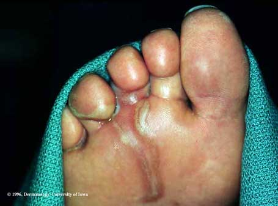
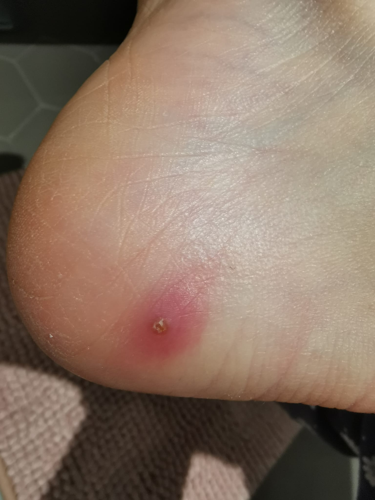
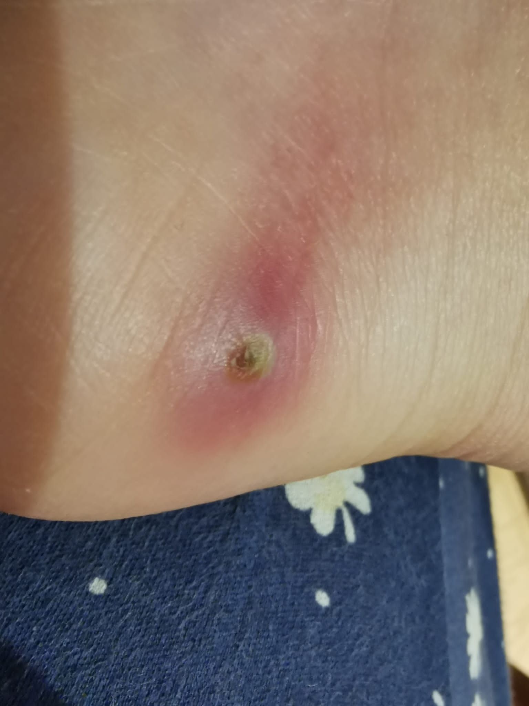
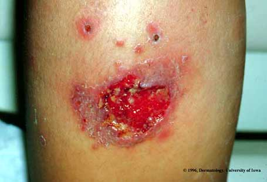
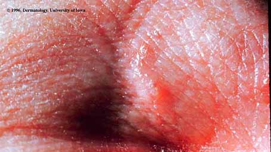

18% des consultations post-voyage sont dermatologiques (Freedman NEJM 2006). Quatre patterns morphologiques guident le diagnostic à la clinique.
| Morphologie | Diagnostic | Agent(s) | Traitement de 1re ligne |
|---|---|---|---|
Trajet serpentant / linéaire |
CLM (larva migrans cutanée) | Ancylostoma braziliense, A. caninum | Ivermectine 200 µg/kg PO dose unique |
Nodule + punctum central + sensation de mouvement |
Myiase furonculaire | Dermatobia hominis (Amériques), Cordylobia anthropophaga (Afrique) | Occlusion (vaseline) → extraction 24–48h |
Ulcère indolore + bords surélevés + base propre |
Leishmaniose cutanée | Leishmania spp. | Biopsie + PCR espèce → RÉFÉRER |
Papules prurigineuses diffuses, aggravation nocturne |
Gale / piqûres arthropodes | Sarcoptes scabiei | Perméthrine 5% + ivermectine 200 µg/kg PO (OFSP 2024) |
Macule hypopigmentée anesthésique Rare, délai diagnostique souvent long |
Lèpre de Hansen | Mycobacterium leprae | Référer — maladie rare, délai diagnostique souvent long |

Iowa PHIL / CDC — domaine public
Ancylostoma braziliense / A. caninum — larves d'ankylostomes animaux en impasse parasitaire chez l'homme. Localisation : pieds (39%), contact avec plage/sable humide, Caraïbes/Amériques tropicales/Afrique/Asie. Avance de quelques mm/j. Prurit intense. Diagnostic clinique. Délai moyen au diagnostic : 41 jours (Sow 2017).

J1

J4 post-extraction
Dr. Ludovico Cobuccio — CHUV
Dermatobia hominis (Amériques) / Cordylobia anthropophaga (Afrique, 'Tumbu fly'). Nodule sous-cutané progressif avec punctum central et sensation de mouvement. Ne répond PAS aux antibiotiques (≠ abcès bactérien). Diagnostic clinique.

Iowa PHIL / CDC — domaine public
Leishmania spp. — zones exposées, incubation semaines à mois. Évolution papule → nodule → ulcère indolore, bords surélevés, base propre. Amérique du Sud/Centrale/Afrique/Bassin méditerranéen. Risque mucocutanée (L. braziliensis, L. panamensis) → toujours identifier l'espèce.

Iowa PHIL / CDC — domaine public
Sarcoptes scabiei — papules et tunnels prurigineux, aggravation nocturne nette. Localisations : espaces interdigitaux, poignets, aisselles, plis inguinaux, organes génitaux. Contamination contact direct (voyage partagé, hôtels). Couple → toujours traiter les deux simultanément.
Parasite animal en impasse — pas de cycle complet chez l'homme. Traitement ivermectine uniquement.
Larve de mouche dans le tissu sous-cutané. Extraction mécanique, pas d'ATB.
Acarien microscopique. Ivermectine PO = couteau suisse tropical (CLM, gale, strongyloïdose).
L'algorithme interactif s'affiche après déploiement sur GitHub Pages (viewer.diagrams.net)